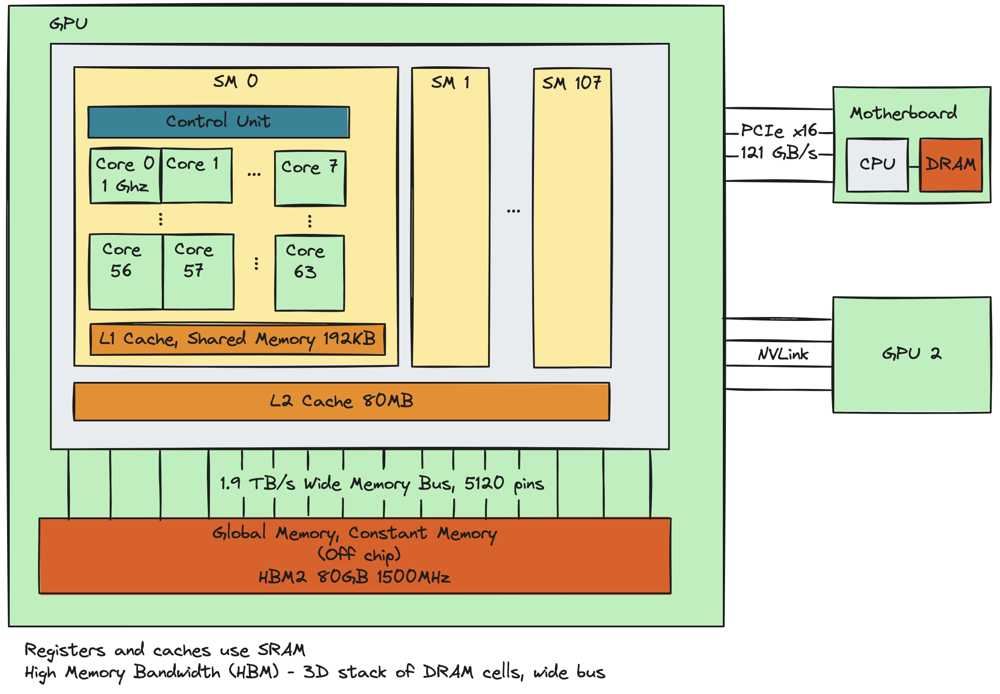

In this post I'll talk about some computing history and
introduce the basic GPU architecture concepts needed for
writing CUDA kernels, such as physical hardware organization, logical
organization/compute model, and memory hierarchy. CUDA kernels are
functions that run directly on NVIDIA GPUs. Most of the syntax is
the same as C/C++, along with key utilities
like GPU memory management and thread synchronization provided by
the CUDA runtime API. I'll also touch upon GPU profiling using
NVIDIA's Nsight Systems, and show a few basic kernels.
CPU History
It's useful to get a sense of the history of computing to understand
where GPUs fit in the landscape. Probably most of this is
not new to you. Here's
a graph showing progress along Moore's law, pulled from Wikipedia's page on
transistor count.
Although single-core clock rates have improved from MHz to 5 Ghz
from the 1980s to the 2020s, clock rates are upper-bounded by
thermal dissipation as transistor density increases (chips will
burn if you run them too hot!), and by the fact that transistor power
draw follows a power law ($P\varpropto f^{k}$ where $k$ is typically
2 to 3). Instead of increasing single-core clock rates to the moon,
it's more power-efficient to design chips with multiple "medium"
frequency cores. This is the driving principle behind
multi-core processor designs and the philosophy is to allow
increased overall throughput via parallelism while maintaining
single-core performance for non-parallel programs. IBM developed
the first dual-core processor in 2001, and Intel shipped the
Pentium D in 2004.
Heterogenous Processors and GPU History
Modern computer architectures have a variety of processors, organized
into a variety of hardware units:
A typical server has a multi-core CPU plus one or more GPUs
connected via PCIe or NVLink.
Intel CPUs have Performance Cores and Efficiency Cores.
NVIDIA GPUs have CUDA cores (graphics, general purpose) and
Tensor cores (matrix ops).
Google TPUs optimize for matrix operations
FPGAs are reconfigurable, semi-general purpose chips.
We even have chips that support multiple ISAs1.
There's lots of heterogeneity because processors are designed to be
efficient on specific workloads and cores have become increasingly
workload-dependent. In fact, the term "dark processors" refers to
heterogenous processors where only a subset of cores draw
electricity at a time. Within this context, GPUs
have obviously become an important player:
1999: NVIDIA releases world's first commercial GPU.
2001: beginning of general purpose programming on GPUs (GPGPU),
"more than just graphics and video games", dark times where
only rudimentary GPU programming support existed for developers.
2003: two independent research groups report matrix operations
running faster on GPU than CPU.
2006: NVIDIA releases the CUDA API and runtime v1.0, an
extension of C syntax for writing functions that run
on GPU threads.
Like all modern architectures outside of quantum computing,
GPUs follow the classical von Neumann model proposed in "First Draft
of a Report on the EDVAC" (von Neumann, 1945) where instructions and
data are stored in a memory system and fetched by one or multiple
control units. However, GPUs have much higher theoretical
throughput2 due to much higher core count, even
though each core runs slower than a CPU core.
CPU: 12-96 cores, 5GHz each
A100: 6912 CUDA cores, 432 Tensor cores, 1065 MHz each
H100: 14592 CUDA cores, 456 Tensor cores, 1095 MHz each
1. Instruction set architectures (ISAs) are neither hardware
nor software, but a specification of what low level instructions
a CPU should support. Amongst the key players x86, ARM and RISC-V
(UC Berkeley, 2010), RISC-V is open-sourced and many find its
non-bloatedness appealing. For example,
Tenstorrent makes GPUs
following RISC-V.
2. Whereas throughput (measured in floating point
operations per second, or FLOPS) in practice is often bottle-necked by
memory bandwidth.
Memory Hardware
Physical memory is arranged as an array of memory cells, which is
why almost all data structures are fundamentally arrays plus
specific algorithms implementing the data structure's
interface. GPUs use dynamic random access memory (DRAM) for its
global memory and static random access memory (SRAM) for caches.
In both cases, single bits are stored in memory cells, but the
physical implementation of memory cells differ and lead to
differences in performance.
DRAM
When people say "this GPU has 80GB of memory", they're
referring to the size of the GPU's global memory, which uses 2D or
3D arrays of DRAM memory cells. These cells are small, consisting of
1 capacitor and 1 transistor, making them cheaper to manufacture and
have higher capacity. The mechanism for storing a bit relies on
charging and discharging the memory cell's capacitor. One reason
that DRAM cells have higher latency compared to SRAM cells is
because they lose charge and require a recharge after every read.
The entire array also loses partial charge over time and require
periodic refreshes to maintain data integrity (on-the-fly, hence
the "dynamic" in DRAM).
How DRAM cells are stacked together also differs. Most consumer
cards such at the GeForce RTX series use GDDR6, which uses a traditional
2D arrangement of cells. Server grade devices like the A100 and
H100 use HBM (high-bandwidth memory), stacking DRAM cells in a 3D
arrangement. This reduce its form factor, travel distance between
cells and bus pins, and latency (at the cost of a more expensive
and complex and manufacturing process).
SRAM
SRAM cells are big. Each cell consists of 6 transistors (hence the
name 6T SRAM cells) making them lower capacity for the same die
size, and more costly to
manufacture. They also draw more power than DRAM cells. The upside
is that the 6 transistors are arranged as a flip-flop circuit that
can represent binary states and be very quickly read, making SRAM
cells have much lower latency. On GPUs, SRAM is used for register
memory and the level caches.
So DRAM is big but slow while SRAM is small but fast. In general
there's a trade-off between latency and capacity, and designers take
into account manufacturing cost, thermal dissipation, total power
draw, and how much die size the memory chip needs, which is a
precious commodity in chip design.
GPU Architecture
Outside of quantum computing, modern computer architectures
fundamentally have not changed since the von Neumann model
("First Draft of a Report on the EDVAC", von Neumann, 1945).
In said model, instructions and data stored in contiguous arrays are
fetched and executed by one or multiple processing units. If you're
interested in a bit of computer architecture history, you can read
a revised version of the report
here.
CPU and GPU chips contain several levels of memory, exhibiting the familiar
characteristics of "small and fast" to "big and slow". Here we
show a 24-core CPU with 3 levels of caching, including a massive
L3 cache shared between all the physical cores. Remember that the
design philosophy of multi-core CPUs is to increase overall throughput
by giving programmers the option to write and run parallel code,
while maintaining low latency and high single-core throughput for non-parallel
programs. Part of this low latency is achieved by massive (MB range)
caches enabling as many cache hits as possible during program execution.
The biggest and slowest memory is your laptop/server's main memory,
which is connected
to your CPU via a memory bus soldered onto the motherboard. At a high
level, three things contribute to low latency: 1) physical proximity
to the ALUs and FPUs incur less travel time, 2) smaller caches
incur less overhead for cache line lookups and for ensuring cache
consistency, and 3) using SRAM cells over DRAM.
GPUs have a similar architecture with a few key differences -
the obvious being several orders of magnitude more cores.
These CUDA cores are bundled into physical units called streaming
multiprocessors (SMs), each of which has its own control unit and
and a small piece of SRAM split between the L1 cache and
Shared Memory. Logically, threads are organized into warps of 32
threads, warps into blocks, and blocks into a single grid. Each block
can have a maximum of 1024 threads and are assigned
wholesale to SMs, i.e. all warps within a block are guaranteed to
be assigned to the same SM. Thus a common kernel pattern involves
multiple threads cooperatively loading data into
Shared Memory, a thread synchronization call to block each thread until
all threads have finished loading their shards, followed by
SIMD1 parallel execution. This makes inter-SM communication
not supported as a first-class citizen, and is meant to simplify
the compute model (since communication between threads scheduled
on different SMs would require additional hardware support on the
die). One somewhat hacky way to get around this is to use atomic
operations on a variable in global memory, in which case one thread
can write a message at the variable's memory offset and any another
thread can read it.

1. Single instruction multiple data (SIMD) parallel processing differs
from single program multiple data (SPMD) in that not only is the
same program being run on multiple shards of data simultaneously,
the same sequence of instructions are being issued and followed by
all threads in lockstep. This makes limiting control divergence
within single warps a performance consideration, which we'll talk
about later. The most common example of SPMD is MPI.
Memory Bandwidth and Latency
PCIe Bandwidth
Data copy between global memory and system main memory goes
through the PCIe bus. You can find one-way transfer rates per lane
by PCIe generation
here. For example, PCIe 6.0 has a two-way throughput of 64 GT/s
per lane, with 2 bits/transfer due to PAM4, and a 242/256 encoding
efficiency due to encoding overhead. This gives a one-way throughput
of 121 GB/s for 16 lanes.
Why are these numbers relevant to performance? The
simplest model of host-device interaction involves something like:
Allocating array(s) in host memory, initializing the array values
with data loaded from disk or as a result of previous host-side
computation.
cudaMemcpy() the data from host memory to arrays allocated on
device global memory.
Launching a CUDA kernel to perform floating-point operations on
these device arrays, and store results in a results device array.
cudaMemcpy() the device-side results array back to a results array
allocated in host memory.
Save the host-side results array to disk or continue on with additional
host-side computation.
The user experiences a latency due to PCIe memory bandwidth every time
data is copied between host and device memory. I profiled a simple
vector-add kernel on an A100 40GB, adding two 1-billion
element vectors. One billion addition ops took only 9ms while the
3 cudaMemcpy() calls (one for A_host to A_device, one for B_host to
B_device, and one for C_device to C_host) across PCIe took more than
1.3s.
HBM Bandwidth
Data transfer from GPU global memory to the GPU's level caches,
Shared Memory and registers is more than an order of magnitude
faster than across the PCIe bus. For example, the
A100 80GB
uses HBM2e double data rate memory clocking in at 1512 MHz, with a
peek bandwidth of 1.94 TB/s.
Even though HBM bandwidth is high, naive kernel implementations can
easily become bottle-necked by memory bandwidth, with throughput
far below theoretical peak FLOPS. One of the characteristic
numbers of a CUDA kernel implementation is its bytes/FLOP ratio.
In the case of the vector-add kernel, every kernel invocation loads
up two float32 array elements from global memory and adds them
together. Assuming no cache hits, this kernel performs 1 addition
FLOP for every 8 bytes loaded from global memory, giving a
bytes/FLOP ratio of 8. This number determines whether your kernel
is compute bound or bound by the global memory's max bandwidth,
kind of like how the Reynolds number determines whether fluid flow
is in the laminar or turbulent regimes.
Memory Latency
Rough read latencies for across memory hierarchy. Recall registers
and level caches are SRAM, while global memory is DRAM. Units are
in CUDA core clock cycles (latency experienced by a thread running
on a CUDA core).
Register: 1-2
L1 cache/Shared Memory: 20-30
L2 cache: 100-300
Global Memory (HBM): 500-800
So reads from register are basically instantaneous. L1 cache
hits and reads from Shared Memory are 20-40x faster than from
global HBM. Of course these numbers are ballpark figures and
varies by GPU generation, the point is to illustrate order of
magnitude differences.
Cache Transparency
In operating systems, transparency refers to a piece of software or
hardware doing something in the background as if it were transparent
or invisible to the user. In terms of building layers of
abstraction, this term naturally finds it place.
You have a collection of hardware and device drivers implementing
hardware-specific logic, exposing APIs at some appropriate level of
detail to the kernel that allows the OS to coordinate hardware
working together.
Like CPUS, GPUs have transparent caching. This means that the
programmer is not responsible for explicitly defining what values get cached,
when they are cached, when they are evicted, temporal locality,
nor the cache eviction policy. All of these things, including handling
cache misses and ensuring cache coherence, are handled automatically
by the cache controllers in addition to coordinating with memory
controllers to send and receive data from global memory. Even the
OS kernel doesn't get involved. Transparent caching reduces complexity
for the programmer and allows hardware designers to abstract away
caching implementation and performance details.
Contrast this with the shared memory portion of the L1 SRAM and
global memory. The programmer explicitly declares and
initializes arrays on those memory locations and is responsible
for freeing allocated memory at the end of their lifetimes.
Resources and References
Most of this stuff came from
"Programming on Massively Parallel Processors: A Hands-On Approach"
by Hwu, Kirk and Hajj, which is probably a well-known book
amongst CUDA programmers. I first stumbled upon it through a
post from Andrej Karpathy on X shortly after his release of llm.c.
The architecture diagrams were made with the excellent
Excalidraw.
Simon Boehm's CUDA Matmul blog post goes through multiple iterations
of a matrix multiply kernel that comes close to parity with
cuBLAS. It's a great next step after reading Part I of the book.